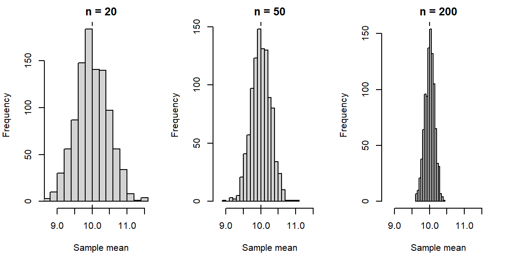
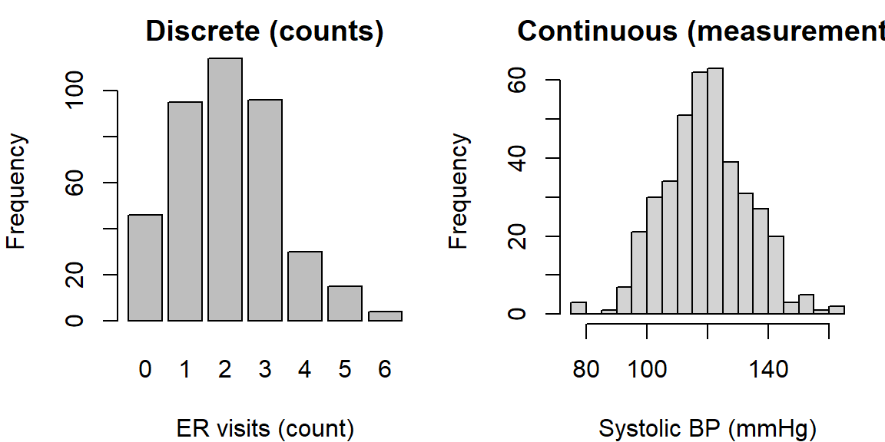

1 Introduction to Statistics
1.1 What is Statistics?
“The non-scientist in the street probably has a clearer notion of physics, chemistry and biology than of statistics, regarding statisticians as numerical philatelists, mere collector of numbers.” - Stephen Senn, Dicing with Death: Chance, Risk and Health
Guiding question: How do we use data to make better decisions?
When people say “trust the data,” it can sound like magic. It isn’t. Statistics is the discipline that helps us collect, organize, and interpret data so that our decisions are more principled and less guess-y. In this course, we’ll treat statistics as a practical toolkit you’ll use across science, business, health, and everyday life.
The basic premise is simple: if we describe the data clearly and account for uncertainty honestly, we can make better choices. That might mean deciding which treatment is more effective, which ad design leads to more clicks, or whether a new policy seems to be working.
What is “statistics,” exactly?
If Statistics concerns data, then we should define “data.” First, note that “
- the amount of profit a company makes,
- the growth of plants under some conditions,
- or how many people voted in an election.
A helpful way to organize the subject of Statistics is to distinguish two complementary activities:
Descriptive statistics help us summarize and visualize what we observed—think graphs, tables, and numerical summaries. The goal is clarity.Inferential statistics help us generalize from a sample to a broader group (or process) and quantify ouruncertainty about that generalization. The goal is justified conclusions.
Even in a short conversation about data, you’ll hear a few recurring ideas:
- A
population is the full set of people, items, or occasions we care about (all Baylor first-years this fall, all batteries produced this week). - A
sample is the subset we actually observe. - A
parameter is a (usually unknown) number that describes a population (the true average battery life, for example). - A
statistic is a number we compute from a sample (the sample’s average battery life) that we use to learn about the parameter.
We’ll study these terms in more detail soon; for now, hold on to the big idea: we summarize what we see (description) and we reason beyond what we see (inference).
Why decisions need both description and inference
Suppose a clinic tests a new flu-prevention program among 200 volunteer patients. A month later, 18% of the “usual care” group got the flu, compared to 12% of the “new program” group. Descriptively, the new program looks better. Inferentially, we ask: could this gap be due to chance? If we ran the study again with different patients, might the difference shrink or flip? Statistics gives us a way to quantify that uncertainty and decide what to do next.
A similar story plays out in business A/B tests, manufacturing quality checks, and sports analytics. The descriptive picture tells us what happened in the data; inference tells us how strongly that evidence supports a decision.
Variability, bias, and honest uncertainty
Two forces shape every data story:
Variability is the natural fluctuation we see from case to case or study to study. Even fair coins produce streaks.Bias is systematic deviation—our design, measurement, or selection method pushes results in a consistent direction.
Good statistical practice aims to reduce bias and acknowledge variability. We’ll use design principles to minimize bias and inferential tools to express uncertainty honestly.
How we’ll work in this course (and in JMP)
Our general workflow:
- Start with a clear question and name the
observational units (what a single case is) andvariables (what we record about each case). - Decide how the data were or will be collected (survey, experiment, database pull).
- Use descriptive statistics and graphics to get oriented.
- Build an inferential argument when you need to generalize or compare.
- Communicate a conclusion in context—what it means, what it doesn’t, and what to do next.
JMP Pro 17 note. In JMP, we’ll lean on Graph Builder, Distribution, and Fit Y by X for description; and on Analyze platforms (e.g., Fit Y by X, Fit Model) for inference. You’ll learn to read the output and connect it to the logic above.
A first look at long-run regularity (illustration)
To make “variability vs. long-run behavior” concrete, here’s a quick simulation of coin flips. Early on, the proportion of heads jumps around. As the number of flips grows, the proportion tends to settle near 0.5. We’ll rely on this idea—randomness in the short run, stability in the long run—throughout the course.
Recap
| Keyword | Definition |
|---|---|
| Statistics | The discipline of learning from data to describe patterns and make decisions under uncertainty. |
| Data | Recorded information about cases (people/items/occasions) used as evidence for questions of interest. |
| Descriptive statistics | Methods for summarizing and visualizing what was observed (tables, graphs, numerical summaries). |
| Inferential statistics | Methods for generalizing from a sample to a population and quantifying uncertainty. |
| Population | The full group or process we want to understand. |
| Sample | The subset we actually observe and analyze. |
| Parameter | A (usually unknown) numerical characteristic of a population. |
| Statistic | A numerical summary computed from a sample, used to learn about a parameter. |
| Variability | Natural fluctuation in data from case to case or study to study. |
| Bias | Systematic deviation caused by design, measurement, or selection issues. |
| Observational unit | The “one thing” a single row in the data represents (a person, part, game, etc.). |
Check your understanding
In your own words, how is describing data different from inferring from data? Give a short example for each.
Identify the population, sample, parameter, and statistic in this scenario: A battery company tests 60 batteries from today’s production line and finds an average life of 7.8 hours. The company wants to know the true average life of all batteries produced today.
A streaming service tests two home-page designs on 5,000 visitors each. Version B produces a 0.6 percentage-point higher click-through rate than Version A. What questions would you ask before recommending the company switch to Version B?
Explain the difference between variability and bias using a dartboard analogy.
Solutions
Description vs. inference. Description summarizes what happened in the observed data (e.g., “The median wait time yesterday was 11 minutes.”). Inference uses the sample to say something about a broader group or process, with uncertainty (e.g., “We estimate the typical wait time for all days like yesterday is 11 minutes, with margin of error ±2 minutes.”).
Battery scenario. Population: all batteries produced today. Sample: the 60 tested batteries. Parameter: the true mean life of all batteries produced today. Statistic: the sample mean of 7.8 hours.
A/B test questions. How were visitors assigned to versions (randomly)? Were there differences in traffic sources or device types? Is the effect stable over time? What margin of error or confidence interval accompanies the difference? What outcome do we ultimately care about (sign-ups, retention), and does the change affect it?
Dartboard analogy. Variability: darts land around the bullseye but are spread out randomly. Bias: darts consistently land off to the lower-left—systematically shifted rather than centered.
1.2 Populations and Samples
“To understand God’s thoughts, we must study statistics, for these are the measures of his purpose.” - Florence Nightingale
Guiding question: What’s the difference between a population and a sample?
When you start any statistical investigation, the first two things to name are the
Defining the population (clearly!)
A population can be concrete (“all tires produced by Line A this week”) or conceptual (“all patients like these under similar conditions”). Two refinements are helpful:
- The
target population is the group you truly care about. - The
accessible population is the group you can practically reach, often represented by asampling frame —a list or mechanism from which you select the sample.
Clarity matters. If your target is “all Baylor first-year students this fall,” using a sampling frame of “students who attend welcome week” might miss commuters or students who arrived late. That gap can create
What counts as a sample?
A sample is the subset of the population you measure. We’ll study “how to sample” in Chapter 2; for now, focus on what a good sample does: it represents the population well enough that statistics computed from the sample are informative about the population.
A special case is a
Parameters and statistics (the bridge between the two)
A
Because samples vary, statistics vary too. That natural fluctuation is
Observational units vs. sampling units
Two related terms often get mixed:
- The
observational unit is “one row of data” (one person, one battery, one game). - The
sampling unit is “the thing you sample” (could be the same as the observational unit, but in cluster designs it might be a school or a household).
Being explicit about units guards against design mistakes and double-counting.
Why sampling works (and when it doesn’t)
Sampling works when your sample is representative of the population and your measurement is trustworthy. It struggles when parts of the population are systematically excluded (coverage problems), when participation differs by outcome (nonresponse), or when the way you select units is related to the outcome (selection effects). We’ll study these threats—and how to reduce them—next chapter.
A quick illustration: samples differ, the goal doesn’t
Below is a simple simulation that shows how sample means wiggle from sample to sample even when we know the “true” population. As sample size grows, the wiggle shrinks.

Even though each sample tells a slightly different story, they all tend to cluster around the true mean of 10. That’s the intuition behind using a statistic to learn about a parameter.
Connecting to JMP Pro 17
In JMP you won’t “declare” the population, but you should always write it down in words before you analyze. Practically:
Use Tables → Subset or randomization tools to create a sample when you have a large file standing in for a population.
Use Analyze → Distribution to summarize your sample (means, proportions).
Keep notes in the Data Table (Table panel → Notes) to record what your population and sampling frame are supposed to be.
Recap
| Keyword | Definition |
|---|---|
| Population | The full group or process you want to understand. |
| Target population | The group you truly care about answering a question for. |
| Accessible population | The portion of the target population you can practically reach. |
| Sampling frame | The list or mechanism from which the sample is drawn. |
| Sample | The subset of units you actually observe and measure. |
| Census | An attempt to measure every unit in the population. |
| Parameter | A numerical characteristic of a population (e.g., \(\mu, p\)). |
| Statistic | A numerical summary from a sample (e.g., \(\bar{x}, \hat{p}\)) used to estimate a parameter. |
| Sampling error | Natural variation in a statistic from sample to sample. |
| Bias | Systematic deviation caused by design, coverage, or selection issues. |
| Observational unit | The “one case” a single row of data represents. |
| Sampling unit | The entity selected during sampling (may differ from the observational unit). |
Check your understanding
A battery plant tests 80 batteries from today’s production line and finds an average life of 7.8 hours. Identify the population, sample, parameter, and statistic.
Your target is “all Baylor first-year students this fall.” You gather data from an email list of students who signed up for an early-interest program. What is the sampling frame? Name a potential source of bias.
In a household survey, you sample addresses, then interview every adult living there. What are the sampling units? What are the observational units?
A marketing team uses comments on their Instagram post to judge product satisfaction among all customers. Explain why this may not represent the population.
Solutions
Population: all batteries produced today. Sample: the 80 tested batteries. Parameter: the true mean life of all batteries produced today. Statistic: the sample mean of 7.8 hours.
Sampling frame: students on the early-interest email list. Potential bias: students who didn’t sign up (e.g., commuters, late enrollees) may be under-represented, creating coverage/selection bias.
Sampling units: addresses (households) selected. Observational units: adults within each sampled household.
Instagram commenters are a self-selected subset; satisfied or dissatisfied users may be more likely to comment, and customers not on Instagram are excluded—both threaten representativeness.
1.3 Variables and Types of Data
“Not everything that can be counted counts, and not everything that counts can be counted.” - Albert Einstein
Guiding question: What kinds of data exist, and how do we recognize them?
Every data table is built from two ingredients: cases (the rows) and variables (the columns). A variable is any characteristic we record on each case. Choosing good analyses—and even drawing the right graph—depends on knowing what type of variable you’re working with.
What is a variable?
A variable can take different values across cases. “Resting heart rate,” “major,” “state of residence,” and “did the patient improve?” are all variables. Variables live in context: we should always be able to say what one row represents (the
The two big families
Most variables fall into two broad families. The names vary by textbook, but the ideas are stable.
Categorical variables
A
Nominal : categories with no natural order (e.g., blood type, home state, device brand).Ordinal : categories with a meaningful order but uneven or unknown spacing (e.g., Likert ratings from “Strongly disagree” to “Strongly agree”; race finish places: 1st, 2nd, 3rd).Binary : exactly two categories (e.g., success/failure, disease/no disease).
Likert Scale
A Likert Scale is a common psychometric scale used in questionnaires to measure attitudes, opinions, or behaviors. It presents a statement and asks respondents to indicate their level of agreement or frequency on a symmetric, typically 5- or 7-point scale. The options range from one extreme (e.g., “Strongly Disagree”) to the opposite extreme (e.g., “Strongly Agree”), often including a neutral or middle point.
Example: “How satisfied are you with our service?”
- Strongly Disagree
- Disagree
- Neutral
- Agree
- Strongly Agree
Quantitative variables
A
Discrete : counts that jump in whole steps (e.g., number of ER visits, defects per unit).
For those who want to see the math:
In math, the possible values of discrete data form what is known as countable set. This means the values form a collection (set) of values that can be put into a one-to-one correspondence with the natural numbers. In other words, a set is countable if you can list its elements in a sequence, even if the list is infinitely long.
There are two type of countable sets:
Finite Countable Set
The set has a limited number of elements.
Example: \(\{2, 4, 6, 8\}\) — there are exactly 4 elements.
Countably Infinite Set
The set has infinitely many elements, but you can still list them in an ordered sequence.
Example: The set of natural numbers \(\{1, 2, 3, 4, ...\}\)
Even the set of all integers \(\{..., -2, -1, 0, 1, 2, ...\}\) is countable — you can reorder them as \(0, 1, -1, 2, -2, 3, -3, ..\) and still list them one by one.
Continuous : measurements that, in principle, vary on a smooth scale (e.g., blood pressure, time to failure, height).
For those who want to see the math:
The possible values of continuous data form an uncountable set. A set is uncountable if there’s no way to list all its elements in a sequence, even infinitely.
Example: Real numbers between 0 and 1 — there are infinitely more of these than there are natural numbers.
In set notation, an example of an uncountable set is \(\{x: x\ge 3\}\).
To decide if a variable is discrete or continuous, first think of an interval of possible values of the variable1. Can you count how many values are in that interval? If so, then it is
Measurement scales you’ll hear about
You’ll occasionally see
Interval : numeric scales where differences make sense but zero is arbitrary (°F, °C). Ratios aren’t meaningful (“40°F isn’t twice as hot as 20°F”).Ratio : numeric scales with a true zero where ratios do make sense (Kelvin, length, mass, time). “10 minutes is twice 5 minutes” does make sense.
You don’t need to memorize the taxonomy; the practical takeaway is to be cautious about ratios on interval scales and to think about what operations make sense for each variable.
“Identifier” and date/time variables
Some columns are crucial for tracking rows but aren’t meant for analysis:
Identifier (ID) variables (e.g., student ID, order number, ZIP code) are labels, not quantities—even when they’re made of digits.Date/time variables carry timestamps that can be treated as either categorical (e.g., day of week) or quantitative (e.g., time since start). Be explicit about which role you intend.
Why types matter (graphs and analyses)
- Categorical → bar chart or pie chart; proportions/percents; chi-square-type tools later.
- Quantitative → dotplot, histogram, boxplot; means/medians/standard deviations; t-tools and regression later.
- Ordinal often behaves like categorical for display, but its order lets you use medians or ordered models.
- Discrete vs. continuous matters for how the plot should look (bars separated vs. bins on a continuum) and for certain modeling choices.
Working in JMP Pro 17
JMP keeps two concepts straight for each column:
- Data Type (what the values are): Numeric, Character, or Date/Time.
- Modeling Type (how you plan to analyze them): Continuous, Nominal, or Ordinal.
Double-click a column header (or right-click → Column Info) to set these. Typical mappings:
- Character + Nominal → categorical labels (e.g., “TX”, “CA”).
- Numeric + Continuous → quantitative measures (e.g., weight, time).
- Numeric + Nominal → numeric codes that are actually categories (e.g., 0/1 flags, ZIP codes, jersey numbers).
- Numeric + Ordinal → ordered categories encoded as 1–5 (Likert items).
If a graph or analysis looks odd in JMP, check these settings first—they control which menu options and displays you’ll see in Graph Builder and Analyze.
A quick illustration (discrete vs. continuous)
The displays below look different because one variable is discrete (counts) and the other is continuous (measurements).

If you tried to “average” home states, you’d get nonsense; if you treated blood pressure as a category, you’d throw away useful information. Getting types right keeps your analysis honest and effective.
Common pitfalls (and quick fixes)
- Digits don’t guarantee “quantitative.” ZIP codes, part numbers, and jersey numbers are
identifiers ; set them to Character + Nominal in JMP. - Collapsing a continuous variable into categories (“high/medium/low”) can simplify communication but often loses power. Keep the original too.
- Treating an ordinal scale as if equal steps are guaranteed can be misleading. Consider medians or nonparametric tools—or justify the approximation.
Recap
| Keyword | Definition |
|---|---|
| Categorical variable | Places a case into a group/label; arithmetic on labels is not meaningful. |
| Nominal | Categorical with no natural order. |
| Ordinal | Categorical with a natural order but uneven/unknown spacing. |
| Binary | A categorical variable with exactly two categories. |
| Quantitative variable | Numeric values where arithmetic is meaningful. |
| Discrete | Quantitative counts that change in whole steps. |
| Continuous | Quantitative measurements on a (nearly) continuous scale. |
| Identifier (ID) | A label used to distinguish cases; not for numerical analysis. |
| Date/time | A timestamped variable that can be treated as categorical or quantitative depending on the question. |
| Measurement scale | Describes how numbers relate to the thing measured (nominal, ordinal, interval, ratio). |
| Interval | Numeric scale with arbitrary zero; differences meaningful, ratios not. |
| Ratio | Numeric scale with a true zero; differences and ratios meaningful. |
| Unit of measurement | The physical unit used to record a quantitative variable (e.g., mmHg, seconds). |
Check your understanding
Classify each variable as categorical nominal, categorical ordinal, binary, quantitative discrete, or quantitative continuous:
- Number of missed classes this semester
- Pain rating on a 0–10 scale
- Whether a chip passes final inspection
- ZIP code
- Body temperature (°F)
A researcher converts systolic blood pressure into “Low” (<110), “Normal” (110–139), and “High” (≥140). Name one advantage and one drawback of this recoding.
Give an example where a date/time variable should be treated as (a) categorical and (b) quantitative.
For each of the following, say whether ratios are meaningful and explain briefly:
- Temperatures in °C
- Hours of weekly exercise
- IQ scores
Solutions
(a)Quantitative discrete (counts). (b) Categorical ordinal (ordered scale with uneven spacing)—often treated as numeric for convenience, but it’s ordinal by design. (c) Binary (pass/fail). (d) Identifier (categorical nominal label; not a quantitative variable). (e) Quantitative continuous.
Advantage: simplifies communication and enables comparisons across broad groups. Drawback: throws away information; analyses lose power and can depend on arbitrary cutpoints.
(a)Categorical: day of week when a call was received (Mon–Sun). (b) Quantitative: minutes since admission, time to recovery, or days from treatment to follow-up.
(a)°C is an interval scale: ratios aren’t meaningful (20°C isn’t “twice as hot” as 10°C). (b) Hours of exercise is a ratio scale with a true zero: ratios are meaningful (4 hours is twice 2 hours). (c) IQ is typically treated as an interval scale: differences are interpretable; ratios are not.
1.4 The Role of Statistics in Research
Guiding question: How does the statistical process turn questions into answers?
Research isn’t just “run a test and see what comes out.” It’s a disciplined loop that starts with a clear research question, moves through careful study design and data collection, and ends with reasoned conclusions—always with honesty about uncertainty. Statistics is the glue in this loop: it helps you plan how to learn, summarizes what you saw, and quantifies what you can responsibly claim.
From question to estimand to design
Every project should name three things up front:
- The
research question : a plain-language statement of what you want to learn (“Does the new tutoring program improve exam scores for Calculus I students?”). - The
target parameter : the specific quantity in the population you want to know (e.g., the difference in mean exam scores between students who receive tutoring and those who don’t). - The
study design : how you’ll collect data that speak to the target parameter (sampling plan, measures, and whether you’ll assign treatments).
Two broad design families appear everywhere:
- An
observational study records what already happens without assigning treatments. It’s great for describing associations but vulnerable toconfounding (other factors moving with your variable of interest). - An
experiment assigns atreatment and compares outcomes. With good randomization and control, experiments support stronger causal claims.
Your choice should match the target parameter and the practical constraints.
The statistical process: a workable blueprint
Here’s a simple, reusable workflow:
- Specify the problem clearly. Name the population, observational units, and variables.
- Design the study. Choose an observational or experimental approach, plan the sample, and anticipate sources of
bias . - Collect data with quality in mind. Strive for reliable measurement and good documentation.
- Explore first. Use
exploratory data analysis (EDA) —graphs and summaries—to understand patterns, errors, and context before modeling. - Model and infer. Pick a tool that matches the question and data type (comparison of means, relationships, predictions).
- Quantify uncertainty. Report estimates with confidence intervals and, when appropriate, p-values (confidence intervals and p-values will be covered in Chapters 9 and 10, respectively). Distinguish statistical significance from practical significance.
- Decide and communicate. Put results back in context: what do they mean, what they don’t, and what action (if any) follows.
- Make it reproducible. Ensure someone else could re-create your steps and numbers from the same data.
You won’t always march in a perfect line—often you loop back after EDA to refine the question or design. That’s good science.
Working in JMP Pro 17
JMP is built for this process:
- Document the plan and steps. Use File → New → Journal to create a running research notebook. Paste screenshots, notes, and output as you go.
- Save scripts to reproduce output. In most reports, click the red triangle ► Save Script → To Data Table (or To Journal). This stores a runnable recipe with the data.
- Explore first. Start with Graph → Graph Builder and Analyze → Distribution to profile variables and check data quality.
- Fit models with assumptions in view. Use Analyze → Fit Y by X for two-variable comparisons and Analyze → Fit Model for multiple predictors. Residual and diagnostic tools are right there in the platform menus.
- Share and rerun. Bundle data, scripts, and notes with Projects or send a Journal so collaborators can reproduce your analysis.
Recap
| Keyword | Definition |
|---|---|
| Research question | The plain-language question your study seeks to answer. |
| Target parameter | The specific population quantity you aim to learn (e.g., mean difference, proportion). |
| Study design | The plan for collecting data (sampling, measurement, assignment) to answer the question. |
| Observational study | A design that observes existing groups without assigning treatments. |
| Experiment | A design that assigns treatments (often at random) and compares outcomes. |
| Treatment | The condition or intervention applied in an experiment. |
| Confounding | A third factor related to both treatment and outcome that distorts comparisons. |
| Exploratory data analysis (EDA) | Early summaries/graphs used to understand data and spot issues. |
| Reproducibility | The ability for someone else to re-create your results from the same data and documented steps. |
Check your understanding
A hospital asks: “Does a new scheduling system reduce ER wait times compared to the current system?”
- State a suitable target parameter.
- Name a design choice (observational vs. experimental) and one reason for your choice.
A university compares GPA between students who use tutoring and those who don’t, with no assignment or randomization. Name a potential confounder and how an experiment would address it.
Solutions
(a)Target parameter: the mean difference in ER wait time (new minus current) for all eligible ER visits. (b) Design: a randomized experiment (e.g., randomize days or shifts to “new” vs. “current”), so groups differ only by scheduling system on average, improving causal interpretation.
Potential confounder: prior academic preparation (e.g., incoming math placement). Students who seek tutoring might differ systematically. An experiment could randomly assign eligible students to tutoring or control (or randomize access), balancing confounders by design.
1.5 The Statistical Process
“An approximate answer to the right problem is worth a good deal more than an exact answer to an approximate problem.” -John Tukey
Guiding question: Why does context matter as much as calculation?
Two analysts can compute the same number and reach very different conclusions—because numbers live inside stories. The
What “context” actually includes
When we say “use context,” we mean four concrete ingredients:
- Data context. What are the observational units? What do the variables represent, and what are their units of measurement?
- Design context. How were cases selected or assigned? Is this an observational study or an experiment? Where could bias or confounding sneak in?
- Measurement context. What is the precise operational definition of each variable? Are instruments calibrated? Is the measurement reliable and valid for the construct?
- Analysis context. What
assumptions do your methods make, and are they plausible here? What domain constraints or conventions matter?
Together, these pieces describe the
Same numbers, different stories: why stratification matters
Comparisons can flip when you ignore a meaningful background factor—a classic “wait, what?” known as
| severity | treatment | successes | total | rate |
|---|---|---|---|---|
| Easy | A | 93 | 100 | 0.93 |
| Easy | B | 828 | 900 | 0.92 |
| Hard | A | 657 | 900 | 0.73 |
| Hard | B | 72 | 100 | 0.72 |
| treatment | successes | total | rate |
|---|---|---|---|
| A | 750 | 1000 | 0.75 |
| B | 900 | 1000 | 0.90 |
Ignoring context (severity) leads to a different recommendation than comparing like with like. The fix is simple in principle: compare within relevant strata or adjust for them in a model.
A practical context checklist (before you compute)
Slow down—ask and answer these, in writing:
- Who/what is a row? Name the observational unit.
- How were data obtained? Sampling plan? Assignment? Time window? Inclusion/exclusion rules?
- What exactly was measured? Give operational definitions and units.
- Which comparisons are fair? Identify potential confounders and plan to
stratify or adjust. - What assumptions will you need? Independence? Linearity? Constant variance? Distributional shape? (We will discuss these assumptions in later chapters)
- What will your claim be? Descriptive statement, association, or causal effect? Match your language to your design.
Working in JMP Pro 17: making context visible
JMP gives you several context-friendly tools:
- Document units and roles. Right-click a column → Column Info to set Units, Modeling Type (Nominal/Ordinal/Continuous), and notes. This prevents accidental “numeric” analysis of IDs.
- Compare like with like. Use Graph → Graph Builder with Group X/Y or Wrap to make side-by-side comparisons within levels of a context variable (e.g., severity, grade level).
- Stratify or filter. Turn on Local Data Filter (from the report’s red triangle) to subset or facet analyses without touching the source table.
- Adjust in a model. In Analyze → Fit Model, include the context variable(s) as effects and consider an interaction to check for effect modification (i.e., whether the effect changes with context).
- Use “By” wisely. Many platforms allow a By variable to run the same analysis separately within each level—great for quick stratified summaries.
Language that respects context
Be precise. In observational data, prefer “
Recap
| Keyword | Definition |
|---|---|
| Context | The who/what/when/where/how surrounding the data that shapes fair comparisons and interpretation. |
| Data-generating process (DGP) | The mechanism or process by which the observed data were produced. |
| Stratification | Comparing groups within levels of a context variable to reduce confounding. |
| Simpson’s paradox | A reversal of an association when data are aggregated versus when compared within relevant strata. |
Check your understanding
A hospital reports that Treatment B has a higher overall recovery rate than Treatment A. After stratifying by initial severity, A has a higher recovery rate in each severity group. Name the phenomenon.
A university analyzes GPA vs. tutoring usage from administrative records (no random assignment). What language should they use to describe the relationship? Name one likely confounder.
Solutions
(a)Simpson’s paradox.
Use association language: “Tutoring use is associated with higher GPA,” not causal. Likely confounders include prior preparation (placement scores), motivation, or course load.
In real world applications, you are usually limited by how you measure. For instance, you may be measuring the length of insects and you measure to the nearest millimeter. This limitation should not play a role in determining continuous RVs. So in theory, insects could measure between 10 and 20 millimeters. You only measure in millimeters but an insect could be 10.1, 10.114, 10.675, 10.000004, etc. Since there are infinite number of values in 10 to 20 that insects could measure in theory, we say the length is continuous.↩︎